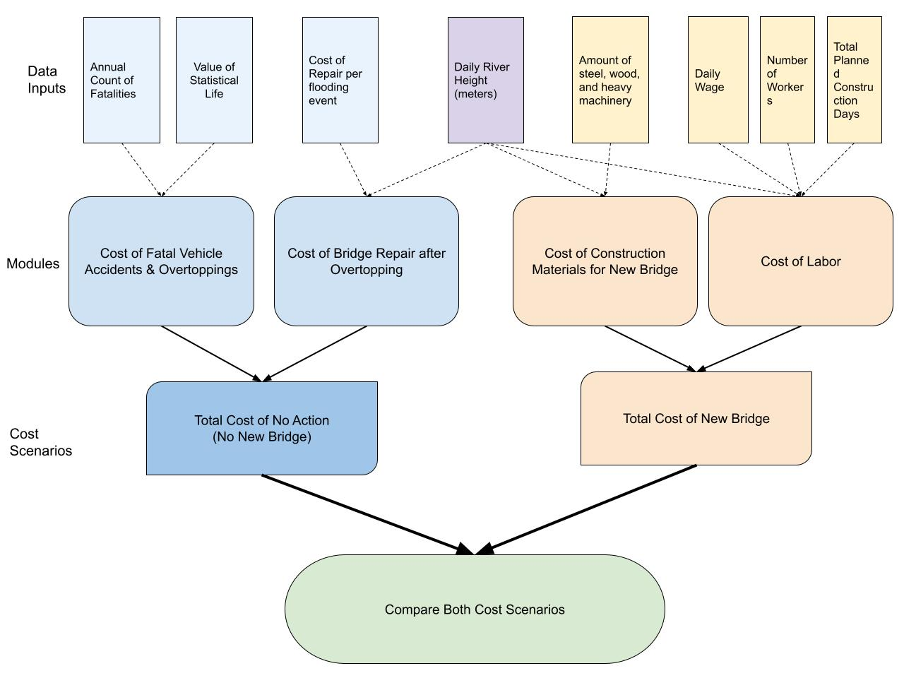

knitr::include_graphics("flowchart.jpg")
With a partner, think of an example complex data science task/program that you might want to design with:
Planning - Step 1
Implementation - Step 2
Ideas
based on amount of precipitation, calculate the height of the water (goes into both options)
costs for no action (old bridge) - accidents/fatalities - infrastructure damages as a function of precipitation - increased travel times due to rerouting when bridge closed
costs for building new bridge - construction materials - construction labor - if there’s too much rain, have to stop construction and delays cost X amount (for loop)
final module - add modules of each option and print results
The California Department of Fish and Wildlife (CDFW) and California Department of Transportation (Caltrans) is considering the replacement of the Sandia Creek Drive crossing with a new bridge by 2027 will reconnect over twelve miles of habitat along the Santa Margarita River for endangered Southern California Steelhead trout (Oncorhynchus mykiss irideus) in northern San Diego County. The Santa Margarita river would be the first perennially-flowing river in Southern California with no anadromous fish migration barriers in its mainstem. The new bridge would also improve emergency response access and evacuation reliability, as its proposed design can withstand a 100-year storm event without overtopping with flowing water.
The agencies wish to compare costs of two options: no action (keeping the existing bridge) and constructing a new bridge. The option with the lowest cost will be chosen moving forward.
The following program uses several modules to compare cost scenarios:
knitr::include_graphics("flowchart.jpg")
The following R packages are needed for this program:
library(tidyverse)── Attaching core tidyverse packages ──────────────────────── tidyverse 2.0.0 ──
✔ dplyr 1.1.4 ✔ readr 2.1.5
✔ forcats 1.0.1 ✔ stringr 1.5.2
✔ ggplot2 4.0.0 ✔ tibble 3.3.0
✔ lubridate 1.9.4 ✔ tidyr 1.3.1
✔ purrr 1.1.0
── Conflicts ────────────────────────────────────────── tidyverse_conflicts() ──
✖ dplyr::filter() masks stats::filter()
✖ dplyr::lag() masks stats::lag()
ℹ Use the conflicted package (<http://conflicted.r-lib.org/>) to force all conflicts to become errorslibrary(here)here() starts at C:/Users/aleci/OneDrive/Documents/ESM 262/esm_262_hw5source(here("fatal_cost.R"))
# use function, and enter the number of annual fatalities below.
npv <- fatal_cost(100)
print(npv)[1] 10571428571npv_format <- format(npv, big.mark = ",", scientific = FALSE)
sprintf("The total cost of fatalities from the existing bridge is estimated to be $%s.", npv_format)[1] "The total cost of fatalities from the existing bridge is estimated to be $10,571,428,571."#total_op1 = npv + repairs
#print(total_op1)
#sprintf("The total cost of no action is estimated at %n.", total_op1)